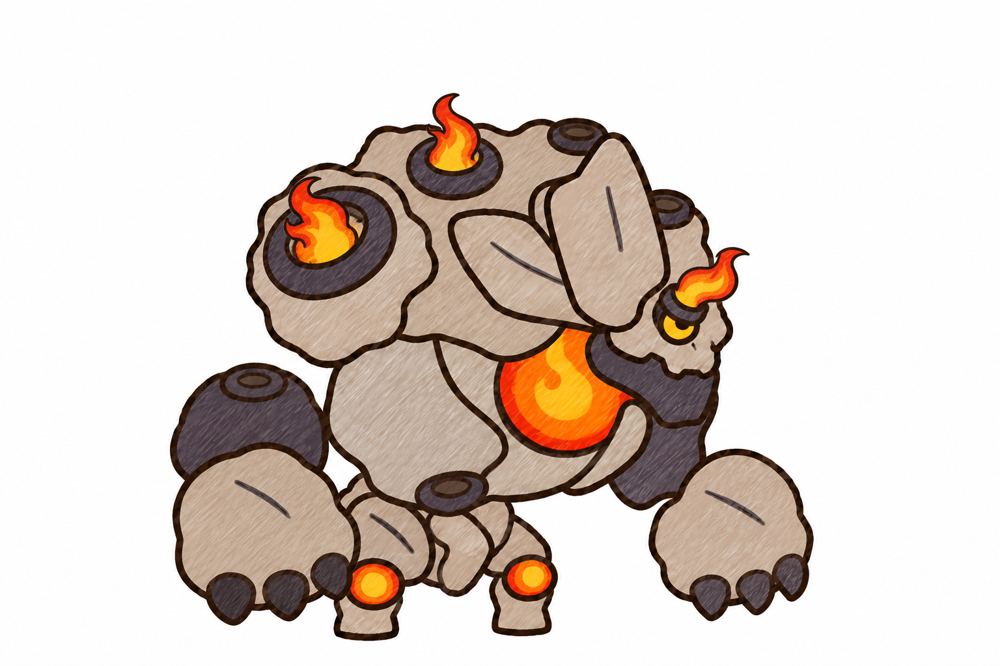
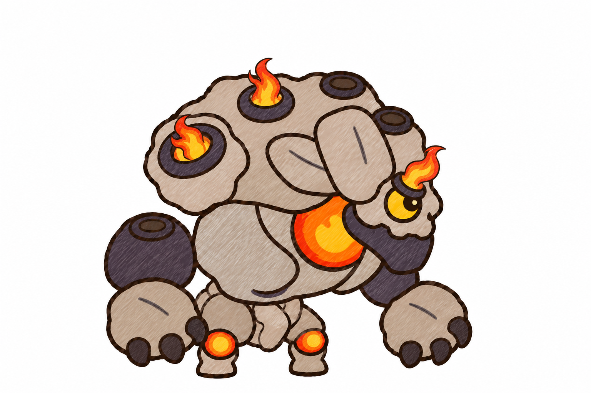
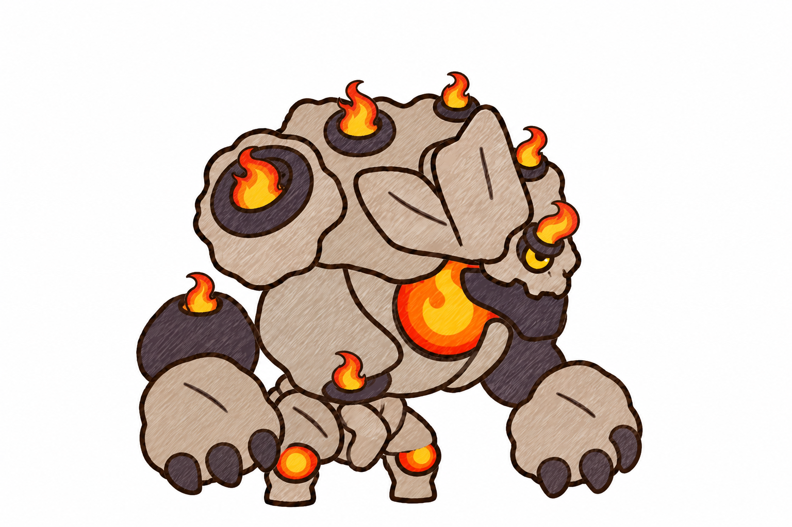

A · mồi lửa (moi_lua)
Giữ khối dáng vát cạnh của dạng 2. Chỉ ba ngọn lửa nhỏ (vai, đỉnh lưng, trán); bốn lỗ còn lại tắt (lỗ tối). Lên dạng 2 thì mọi lỗ bùng cháy.

B · cuội tròn (cuoi_tron)
Thú non chibi: đầu và mắt to hơn, khối đá tròn như đá cuội, tay nhỏ hơn. Ba ngọn lửa nhỏ, bốn lỗ còn lại tắt.

C · đủ lửa nhỏ (du_lua)
Giữ khối dáng dạng 2 và đủ bảy ngọn lửa, ngọn nào cũng chỉ bằng nửa.

Dạng 2 đã duyệt (để so)
Nham Thần: bảy ngọn lửa lớn, vuốt đen to.